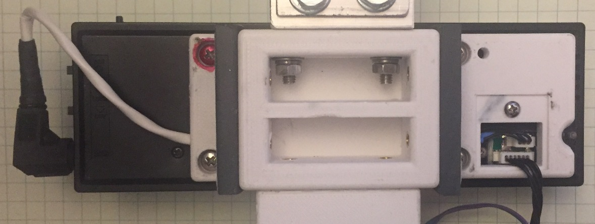
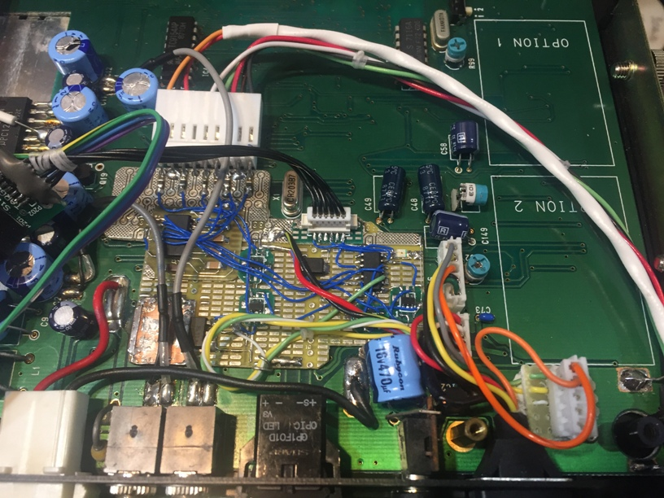
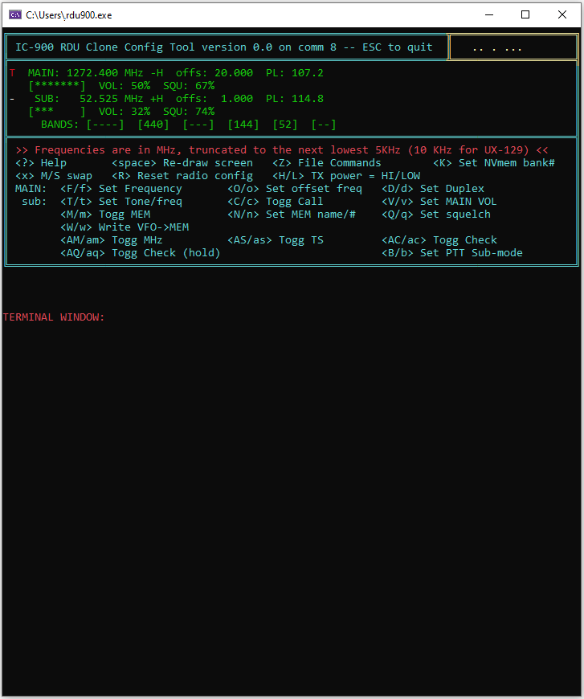

|
Part III…The Conclusion
It is hard to believe that it has been almost a year since I published the beginings of this story.
Progress has been in fits and starts, but lately more intense. I was traveling over-the-road more than usual and this pressed me to think and work more
towards a final target for the system. I also wanted to get the HM-133 remote connection established so that I could use the functionality
it provides (and to which I have become accustomed when using the IC-901 that I currently have in my vehicle).
Part II concluded with the establishment of basic radio functionality. The ultimate completion of the design requires more advanced funtionality to
allow the cloned controller to reproduce most, if not all, of the original functions (and some new ones). In addition, the inclusion of remote control capability
is also an important aspect of the overall design allowing, at minimum, remote configuration of system memories. Real-time remote control is also
desired but not a firm requirement. Here I describe the conclusion of my attempt to re-create the controller for an ICOM IC-900 multi-band radio
system.
The Requirements are Forming in my MIND…
Most of my hobby projects are solo efforts. As such, I generally forego the rigor of a formal requirements document. At best, I will scribble notes
into one of my engineering notebooks. Often, however, the requirements develop or crystalize during coding. If I'm lucky (and I rarely am), I will
capture them in the source code comments. The result of this paradigm is that the end result often looks much different from than first imagined. This
can happen in more formal design enviroments, but is almost assured in the less formal ones, like here. However, I am generally more agile in this
environment and can adapt the design as it takes shape and I don't have to answer to any bosses or customers, except myself.
There are some features that just aren't likely to make the final cut. VFO scan and tone decode are two of these. I just don't ever use them, so they
haven't gotten any traction. Other features evolve and priorities shift... the bluetooth interface is one that has fallen from prominence in my mind over the last year
or so. Mostly due to the fact that I have had issues with my IC-901 remote control link. In spite of efforts to improve the RF performance of that system, I still find it
to be less reliable than my comfort level allows. Somethings stay, and some things are lost (or, pushed back so far that they fall off the back of the table).
My first computer control command was geared at filling in the gap for the memory name string. Creating a user-interface for editing this string on the LCD
just wasn't something I wanted to tackle right off the bat (if ever). This led to the full memory store command, and then other "setting" commands.
Such give-and-take is a regular thing up here in the hack-a-day hardware and software shop.
The Big Push (or, lots of medium sized pushes)…
Once I got the memory support commands established, things cooled for a bit. I used the radio on the bench as often as possible, but not much code work.
A couple of months ago, this changed (but I'm not exactly sure why) when I started working on the wired remote interface. This started from the same
HM-133 bluetooth project
I'd done for one of my IC-901 radios, but without the bluetooth. It works by hi-jacking one of the microphone signals (the up/down signal) to send the serial data to the
host via the A-Unit. The HM-133 was modified (a duplicate HM-133 board, that is) to drive the up/down connection with the serial output signal. The up/down operation was
then coded into
a serial message. At the other end of the microphone connection is the IC-900 A-Unit - a small enclosure that houses the "hub" of the IC-900 radio system. Inside the
A-Unit, a small MCU circuit (An ATTINY-1604) was placed to intercept the serial line that was once used for up/dn. This MCU then reproduces the up/dn signal which is
routed to the appropriate point in the A-Unit to "complete the circuit" and restore the up/dn functionality.
From this point, the serial connection needed to be routed to/from the RDU. The RDU has a "debug" serial port connection, but there is no was to get that connection out
of the enclosure using existing wiring. The only viable solution was to cut a hole in the back of the RDU case and attach a small connector for the serial port. At the
same location, a 6-pin programming connector was also placed allowing access to program and debug the system
without having to take the enclosure apart. This access port
was "covered" by a 3D printed mounting bracket that featured a small opening with a pocketized cover for the port, as shown in Photo 1.

Photo 1. RDU mounting frame & serial/programming port ("pocket cover" shown removed).
The 3D-printed cover (with thanks to Jim, K5KTF) featured guide slots for cables which facilitated connecting a remote serial port. The existing RDU power/comm
cable was combined with the serial cable in a mini-DIN 6-pin connector to simplify the removal of the RDU. The serial port was routed into the A-Unit where I located
the nexus of the remote RDU serial data paths. Using the debug port solves one problem, but dedicating that port to the HM-133 remote means that the only other
remote COM access is via bluetooth. To remove this as a requirement (I'm OK with having a bluetooth link LATER, but I don't want to be distracted with it now) the remote PC
connection needs to be muliplexed with the HM-133 remote connection. The ATTINY-1604 was pressed into service to manage the serial port selection for the RDU. Using the
RTS signal from a standard RS-232 COM port, the ATTINY can activate a switch that connects the PC to the RDU. With the RTS inactive or not connected, the connection
is to the HM-133. At the very least, the HM-133 will only be offline when the PC is connected for configuration tasks. However, if the PC can manage the RTS signal
it becomes possible for the PC and HM-133 to coexist with only minor conflicts. More on this later.
Once the connection details were worked out, it was then possible to begin coding the changes to the HM-133 software to remove the BT support and also code the ATTINY
application. As part of the process, the notion of the FUNC button (present on the HM-133 microphones) was implemented to allow additional functions to be supported
(such as volume and squelch, among others). The RDU application code also needed modification to be able to intercept the keypress messages from the HM-133 and
interpret them. This turned out to be pretty straightforward when implemented as an extension of the existing button press software. By inserting a signal stream
at the point where the button presses had been captured and decoded, it was a simple task to convert the inbound HM-133 messages into simulated button presses.
This makes it possible for the HM-133 to emulate any button-press that currently exists on the RDU plus any "new" button-functions that were desired.

Photo 2. The A-Unit wired-remote interface installation.
The ATtiny MCU located in the A-Unit interface actually has several tasks to perform. It monitors the serial traffic on the data line from the HM-133 interface, and
it also reads the analog voltage on this signal to support the presence of a standard HM-14 (or similar) microphone. It also monitors the RTS signal from the host and
produces a CTS output signal for use with a non-handshake terminal. These peripheral connections allow the ATtiny to determine the type of microphone connected and switch the
serial connection between the HM133 and the PC COM port based on the status of RTS.
That last task allows for an interesting PC interface paradigm. If the PC hosts an application that can activate RTS only when it is sending data, the HM133 wired-remote
can still be used with relatively little risk of conflict, assuming that there is a low degree of traffic from the PC system (as is the generally expected case). Such
an application is also part of this project. By adpating a VisualC application that I wrote for the FFront Project, I can
produce a virtual radio display and control
the IC-900 from a PC while still using the HM133 microphone for remote control activities.
Where's the Remote?!?!?
The CAT remote control application is a whole other project, in the midst of a whole other project. The good news is, it is a cut-n-paste from a working application
whereby the overall gist of the two targets is the same. The RDU CAT control path simply has more commands and status variables that need to be managed. Merging this
project with my Morse
Keyboard has some interesting implications as that would allow for the placement of dials and dedicated buttons which could be used to send specific keystroke
combinations to the VisualC application. Fodder for a future project, I suppose.
Of course, there is also the KPU (mentioned in a previous installment in this series)
which could be deployed to interface to the IC-900 RDU to provide a remote terminal that can be placed in a location rather different from that of the RDU. This
would allow for a reasonably eyes-free human interface without the arm-strain of reaching out at arms length to fiddle with the RDU controls. Again, fodder for a
future effort.

Figure 1. An early concept of the user interface for the IC900 VisualC application.
I have pondered the idea of using an existing radio protocol (I'm familiar with the ICOM CIV and Kenwood protocols) to allow the use of an off-the-shelf radio control
program. This would prevent a "re-invention of the wheel", saving effort
while providing for a choice of software programs that have been well vetted by a broad user base. If not for the multiplexd serial port, I might put more effort into
this idea. Perhaps if I ever get a bluetooth serial connection scheme worked out, I will revisit this idea.
For now, just getting the VisualC key-press based remote control up and running will present plenty enough challenge to keep me occupied for a while. The initial work
of producing the support hooks in the RDU software is the main task for now, with the VisualC application being something that will likely draw out for a few months as it is
tested and refined. In the meantime, TerraTerm can fill in to allow for simple memory management tasks.
Conclusion
One of the aspects of this design path is that serendipity played a major role in both the inception and the outcome. Many of the features implemented were unforseen
at the begining and
allowing the freedom to deviate from the original IC-900 operation allowed for many improvements that would have been difficult if not impossible to predict or
specify at the outset.
The software is pretty involved, but it has proven to be a bit more robust than I had feared. I have been able to add features using previously designed structure
without totally breaking the overall operation. I also have had luck with reading my previous comments, at least for the most part. Of course, it is a bit early
to start celebrating, but the outlook is good.
As previously mentioned, there are some features that have been excluded from the final design but the list is short and I don't feel particularly guilty about
declaring victory at this juncture.
It is nice to "finish" a project once in a while even though my projects are NEVER truly finished. When they can be used with some degree of reliablity in
real-world scenarios, then they have reached a milestone that is as finished as it gets around here. I look forward to using my newest, favorite radio. Not a
moment to soon either, as my IC-901 in the car has now stopped working. Man, I HATE these radios sometimes...
This is a summary of the changes to the original operating interface:
| Feature |
|
Description |
| Buttons |
|
Several buttons were modified from the original IC-900 operation: VFO, MR, CALL, DUP(HOLD), TONE(HOLD), CHECK & CHECK(HOLD), MHz, SET,
SMUTE(HOLD), SQU-UP(HOLD), VOL_DN(HOLD) |
| MFmic |
|
The HM-133 interface project was adapted to provide full
control of the radio from the HM-133 buttons |
| CAT |
|
Computer Aided Transciever. With the benefit of a system of added cabling and the HM-133 multiplexing interface, the
"debug" serial port was adapted to allow for real-time radio control and configuration access. The addition of a PC-based application allows for remote
control via a PC or other serial interface. |
| MEM Banks |
|
The relatively large NVRAM can be accessed as "banks" of memories using the SET key (up to 10 banks for the moment) to allow
for more storage |
| PTT-SUB |
|
This feature first appeared in my IC-901 HM-133 interface and has been expanded upon here. This feature allows the
radio configuration to be modified at each PTT transition. Basically, the radio "toggles" one of 3 features, or can be disabled: No-toggle, SUB-MUTE,
SUB-Call, and MAIN-Call. This family of features is aimed at various full-duplex scenarios but the MAIN-Call mode is geared toward an ad-hoc "odd-offset" feature
whereby the TX and RX frequency can be placed in the VFO and a CALL channel and then the system will toggle between the two for TX and RX. |
The button-hold feature to jump into a deeper configuration level is perhaps the most moving of the changes. This elliminates the need for the (rather annoying) SET-LOOP
to configure the radio. The access to the settings is more direct and intuitive than with the SET mode. The worst of the results is that the LCD segments
and button nomenclature are fixed, which requires a lot of poetic license to add or re-arrange features. Such is the nature of the project, I suppose.
Overall, the state of the IC-900 clone is such that it operates much more like a modern radio with microphone driven function buttons and available
CAT-configuration and control capabilities.
With this design essentially complete, I can now start thinking more seriously about replicating the effort for the IC-901. Porting the code to the more
imposing Tiva MCU will not be trivial (at least, that has been my prior experience with a similar porting effort) but the larger processor offers many opportunities for
overall improvement. The IC-901 has the same number of buttons, but its LCD is somewhat different, so there will have to be some changes to the underpinnings
of the code. Still, the essential similarity of the two radios promises to make the port of the high-level architecture rather straightforward. We shall see...
← (Back to the Projects page...)
|